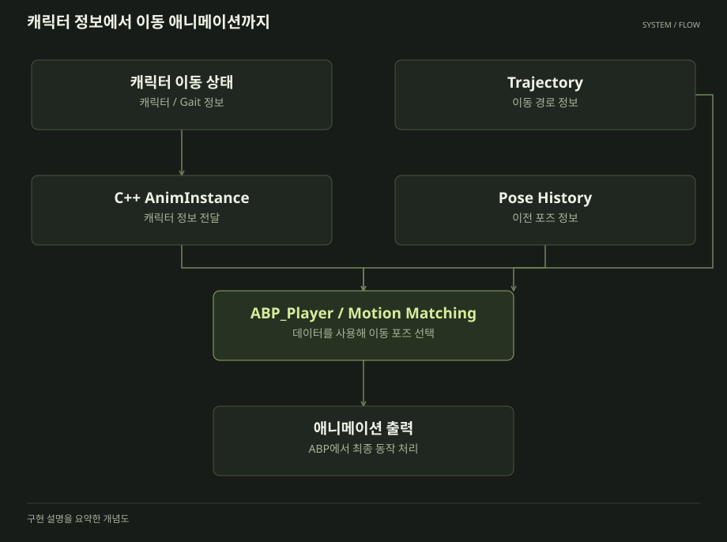
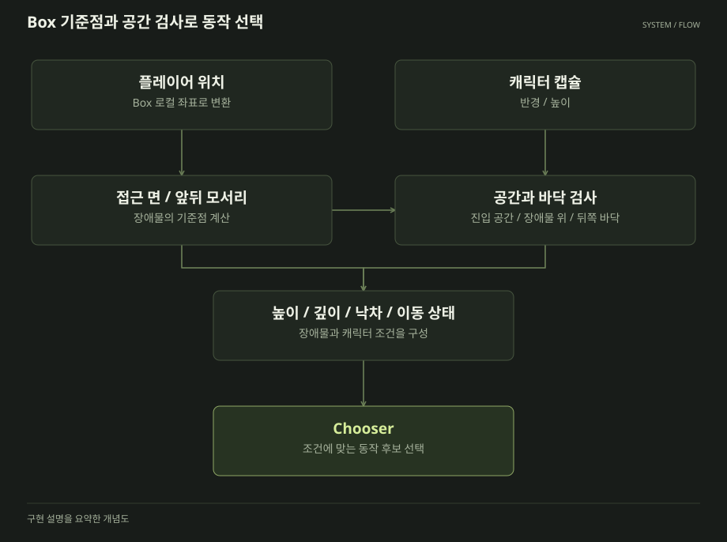
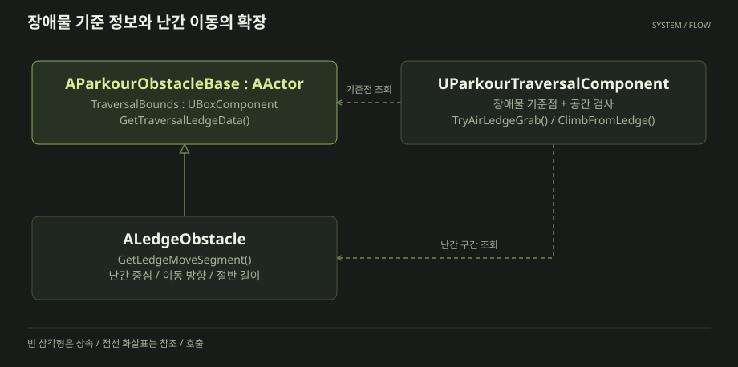
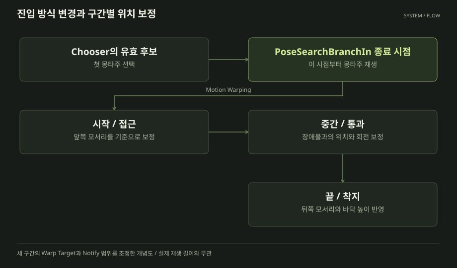
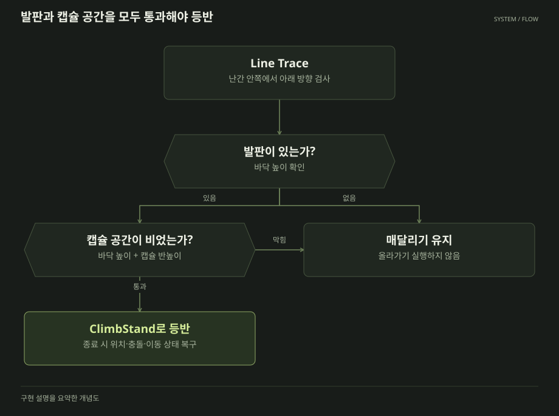

GOAL / IMPLEMENTATION
개발 목표와 구현 범위
Motion Matching과 애니메이션 학습을 목표로 시작한 프로젝트입니다. GASP를 참고해 이동을 구성하고 파쿠르와 난간 이동을 확장했습니다. 공간 검사와 이동 제어는 C++, ABP와 UI는 Blueprint 로 작업했습니다.
구현 범위
장애물 판정 / 파쿠르 실행 / 매달려 이동하기 / 게임 진행과 UI 연결
PROBLEM / SOLUTION
문제와 해결
공간이 막힌 난간에서도 올라가던 문제
문제
난간 위에 장애물이 있어 캐릭터가 설 수 없는데도 등반을 시작해 장애물을 뚫고 올라갔습니다.
해결
발판과 캡슐 공간을 모두 검사 하고, 조건을 통과할 때만 등반하도록 수정했습니다.
구현 과정 자세히 보기 ↓
MOTION MATCHING
Motion Matching 구성과 조정
이동 데이터를 연결하고, 실제로 선택되는 포즈와 전환 시점을 확인했습니다.
1-1 이동 Trajectory와 애니메이션 정보 연결
GASP를 참고해 ABP_Player에서 Trajectory와 Pose History를 Motion Matching에 연결 했습니다. ConcreteAscentAnimInstance.cpp는 캐릭터와 Gait 정보를 제공하고, 애니메이션 출력은 ABP에서 처리했습니다.

크게 보기 ↗ ↳ 캐릭터 정보에서 이동 애니메이션까지
</> 관련 코드 펼치기 +
ConcreteAscentAnimInstance.cpp
C++
초기화 시 소유 캐릭터를 참조하고, GetGaitFromPlayer()에서 캐릭터의 현재 Gait를 읽습니다. 이 값은 ABP가 이동 상태에 맞는 애니메이션을 구성하는 데 사용합니다.
void UConcreteAscentAnimInstance::NativeInitializeAnimation()
{
Super::NativeInitializeAnimation();
OwnerCharacter = Cast<AConcreteAscentCharacter>(TryGetPawnOwner());
}
// ...
void UConcreteAscentAnimInstance::GetGaitFromPlayer()
{
if (!OwnerCharacter)
return;
Gait = OwnerCharacter->GetGait();
}
1-2 Pose Search Schema 조정 경험
착지 모션의 재생 시점이 의도와 어긋나 Pose Search Schema의 파라미터 조정 이 어려웠습니다. 설정을 바꾸며 선택되는 포즈와 착지 전환을 확인했습니다. 일반 이동은 Motion Matching을 유지하고 파쿠르는 별도의 몽타주 진입 방식으로 구성했습니다.
▶
↳ Pose Search 설정을 조정하며 확인한 착지 모션의 차이
TRAVERSAL
Box 기반 판정과 Motion Warping
장애물의 모서리와 공간 검사 결과를 동작 선택 및 위치 보정에 사용했습니다.
2-1 Box Component로 장애물의 기준점 계산
장애물의 기준점을 간단히 계산하기 위해 Spline 대신 Box Component 를 사용했습니다. 플레이어 위치를 Box 로컬 좌표로 변환해 접근 면과 앞뒤 모서리를 구했습니다.
캡슐 크기로 진입 공간과 장애물 위, 뒤쪽 바닥을 검사했습니다. 높이, 깊이, 낙차와 이동 상태를 Chooser에 전달해 가능한 동작을 선택했습니다.

크게 보기 ↗ ↳ Box 기준점과 공간 검사로 동작 선택

크게 보기 ↗ ↳ AParkourObstacleBase는 Box 기준의 앞뒤 모서리 정보를 제공합니다. ALedgeObstacle는 이를 상속해 난간 이동 구간을 추가하고, UParkourTraversalComponent가 두 정보를 사용합니다.
</> 관련 코드 펼치기 +
ParkourObstacleBase.cpp
C++
Box 로컬 좌표에서 구한 NormalizedX와 NormalizedY를 비교해 접근 면을 고릅니다. X축 면에 접근한 경우 좌우 위치를 Box 범위 안으로 제한하고, 높이는 Box의 윗면에 맞춰 앞뒤 모서리를 계산합니다.
if (NormalizedX >= NormalizedY)
{
const float SignX = LocalActorLocation.X >= 0.f ? 1.f : -1.f;
const float ClampedY = FMath::Clamp(LocalReferenceLocation.Y, -BoxExtent.Y, BoxExtent.Y);
// 플레이어가 접근한 X축 방향 면을 FrontLedge로 사용한다.
FrontNormalLocal = FVector(SignX, 0.f, 0.f);
BackNormalLocal = -FrontNormalLocal;
FrontLedgeLocal = FVector(SignX * BoxExtent.X, ClampedY, BoxExtent.Z);
BackLedgeLocal = FVector(-SignX * BoxExtent.X, ClampedY, BoxExtent.Z);
}
2-2 파쿠르 진입 방식과 위치 보정
기존 파쿠르는 캐릭터에 추가된 attach 본으로 장애물에 맞는 진입 포즈를 검색했습니다. 가상 본으로 대체하려 했지만 원하는 방식으로 해결되지 않았고, 캐릭터 에셋이 바뀔 때마다 본을 추가하는 작업은 비효율적이라고 판단했습니다.
그래서 파쿠르 진입 포즈 검색을 생략하고 PoseSearchBranchIn Notify가 있으면 종료 시점부터 몽타주를 재생 하도록 변경했습니다. Chooser의 유효 후보 중 첫 몽타주를 선택하고, 이후 장애물에 맞출 위치와 회전은 Motion Warping으로 보정했습니다.
위치가 어긋나는 구간은 시작, 중간, 끝으로 나누어 Warp Target과 Notify 범위 를 조정했습니다. 앞뒤 모서리와 실제 바닥 높이를 기준으로 접근, 통과, 착지를 각각 확인해 동작이 끊기지 않게 맞췄습니다.

크게 보기 ↗ ↳ 진입 방식 변경과 구간별 위치 보정
</> 관련 코드 펼치기 +
ParkourTraversalComponent.cpp
C++
Chooser의 유효 후보 중 첫 몽타주를 선택하고, PoseSearchBranchIn Notify의 종료 시간을 StartTime으로 저장합니다. 반환된 결과를 캐릭터가 몽타주 재생과 위치 보정에 사용합니다.
UAnimMontage* SelectedMontage = ValidMontages[0];
float StartTime = 0.f;
FindPoseSearchBranchInEndTime(SelectedMontage, StartTime);
CurrentTraversalResult.ChosenMontage = SelectedMontage;
CurrentTraversalResult.StartTime = StartTime;
CurrentTraversalResult.PlayRate = 1.f;
OutResult = CurrentTraversalResult;
return true;
ConcreteAscentCharacter.cpp
C++
파쿠르 검사에 성공하면 결과를 저장하고 이동 상태를 전환합니다. 장애물의 앞뒤 모서리와 바닥에 맞춰 Warp Target을 갱신한 다음, 앞서 계산한 StartTime부터 몽타주를 재생합니다.
if (ParkourTraversalComponent->StartTraversal(TraversalResult))
{
CurrentTraversalResult = TraversalResult;
BeginTraversal();
UpdateTraversalWarpTargets(CurrentTraversalResult);
const float MontageLength = PlayTraversalMontage(CurrentTraversalResult.ChosenMontage, CurrentTraversalResult.PlayRate, CurrentTraversalResult.StartTime);
if (MontageLength > 0.f)
return;
EndTraversal();
}
LEDGE MOVEMENT
매달려 이동하기
난간을 잡은 뒤 이동, 등반, 떨어지기로 이어지는 행동을 구성했습니다.
3-1 난간 잡기와 좌우 이동
공중에서 난간을 잡으면 캐릭터 위치를 난간 축에 투영해 Offset을 구합니다. 캡슐 반경을 반영해 이동 범위를 제한하고, 좌우 이동 몽타주의 길이에 맞춰 위치를 보간 했습니다.
벽과의 간격 및 캐릭터 높이를 보정하고 이동 중에만 Tick을 활성화했습니다. 손을 놓으면 몽타주, 타이머, Warp Target을 정리한 뒤 Falling으로 전환합니다.
▶
↳ 난간 잡기와 좌우 이동, 올라가기 시연
</> 관련 코드 펼치기 +
ParkourTraversalComponent.cpp
C++
입력 방향에 따라 다음 Offset을 난간의 이동 가능 범위로 제한하고 좌우 몽타주를 선택합니다. 몽타주 길이를 이동 시간으로 저장한 뒤 Tick을 켜서, 해당 시간 동안 시작 Offset에서 목표 Offset까지 보간합니다.
const float DirectionSign = Direction > 0.f ? 1.f : -1.f;
const float TargetOffset = FMath::Clamp(CurrentLedgeOffset + DirectionSign * LedgeMoveStepDistance, CurrentLedgeMinOffset, CurrentLedgeMaxOffset);
// 난간 끝이면 이동하지 않음
if (FMath::IsNearlyEqual(TargetOffset, CurrentLedgeOffset, 0.1f))
return;
const ETraversalAction MoveAction = DirectionSign < 0.f ? ETraversalAction::LedgeMoveLeft : ETraversalAction::LedgeMoveRight;
const float MontageLength = PlayLedgeMontage(MoveAction);
LedgeMoveStartOffset = CurrentLedgeOffset;
LedgeMoveTargetOffset = TargetOffset;
LedgeMoveElapsedTime = 0.f;
LedgeMoveDuration = MontageLength > 0.f ? MontageLength : LedgeMoveDefaultDuration;
LedgeMoveDuration = FMath::Max(LedgeMoveDuration, 0.05f);
bIsLedgeMoving = true;
SetComponentTickEnabled(true);
3-2 올라갈 공간이 없는 곳에서의 등반 방지
올라가기 기능을 추가했을 때 난간 위에 장애물이 있어도 그대로 뚫고 올라갔습니다. 등반 전에 발판의 존재와 캐릭터가 설 공간을 모두 확인 하도록 수정했습니다.
CanClimbFromLedge()에서 난간 안쪽의 위치를 구하고, 위에서 아래로 Line Trace를 수행해 바닥 높이를 찾습니다. 여기에 캡슐 반높이를 더한 중심 위치에서 OverlapBlockingTestByChannel()로 공간을 검사했습니다.
바닥이 없거나 캡슐이 다른 장애물과 겹치면 매달리기를 유지합니다. 검사를 통과한 경우에만 ClimbStand Warp Target으로 등반하고, 종료 시 서 있는 위치를 보정한 뒤 충돌과 이동 상태를 복구했습니다.

크게 보기 ↗ ↳ 발판과 캡슐 공간을 모두 통과해야 등반
</> 관련 코드 펼치기 +
ParkourTraversalComponent.cpp
C++
바닥 검사로 구한 최종 위치에 캐릭터 크기의 캡슐을 겹쳐 봅니다. 막힌 공간이면 false를 반환해 올라가기를 시작하지 않습니다.
OutStandLocation = FVector(DesiredStandXY.X, DesiredStandXY.Y, FloorHit.ImpactPoint.Z + CapsuleHalfHeight + LedgeClimbStandZOffset);
OutStandRotation = Inward.Rotation();
// 서는 위치에 캡슐이 들어갈 공간이 있는지 검사한다.
FCollisionQueryParams OverlapParams(SCENE_QUERY_STAT(LedgeClimbRoomCheck), false);
OverlapParams.AddIgnoredActor(OwnerCharacter);
const FCollisionShape CapsuleShape = FCollisionShape::MakeCapsule(CapsuleRadius, CapsuleHalfHeight);
const bool bBlocked = GetWorld()->OverlapBlockingTestByChannel(OutStandLocation, FQuat::Identity, RoomTraceChannel, CapsuleShape, OverlapParams);
return !bBlocked;
}
MORE / IMPLEMENTATION
기타 구현